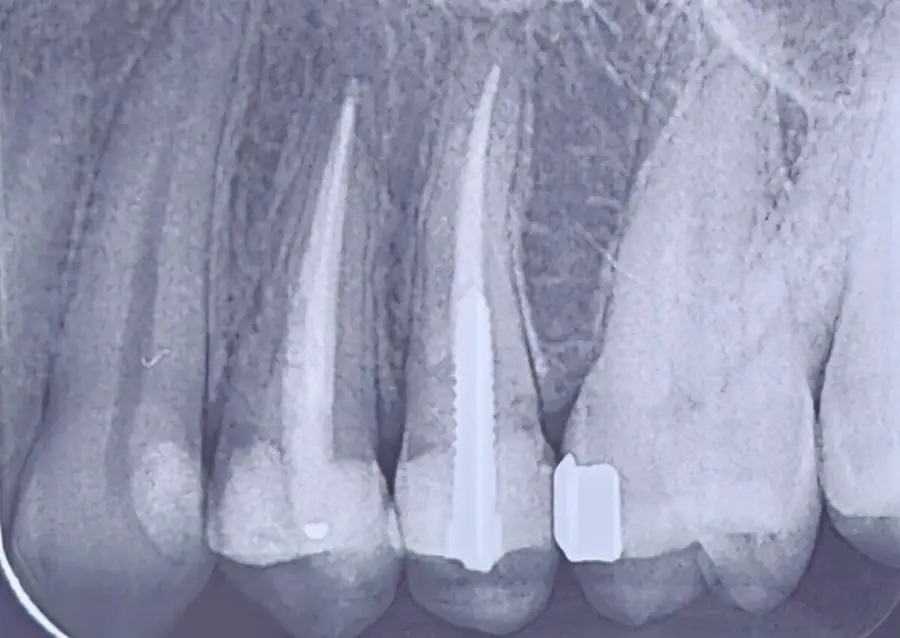

نسخه استخراجشده؛ ترجمه یا تأیید علمی انجام نشده است. وضعیت: captured
بیمار برای گذاشتن روکش روی دندان پریمولر اول آمده است. ترمیم کامپوزیت دندان را همکار دیگری انجام داده. در معاینهی کلینیکی وضعیت نسج دندان خوب است؛ آنقدر دیواره و ارتفاع باقی مانده که بعید به نظر میرسد برای تراش و رسیدن به ferrule کافی مشکلی پیش بیاید.

اما رادیوگرافی چیز دیگری نشان داد: ترمیم خیلی بزرگتر از چیزی بود که در معاینه به نظر میرسید و نسج واقعی دندان کمتر بود. همین تناقض نمای کلینیکی و رادیوگرافی نقطهی شروع بررسی شد.
پیش از هر تصمیمی، از بیمار پرسیده شد هدفش از روکش چیست و چطور به این فکر افتاده. پاسخ این بود: همکاری که کامپوزیت را گذاشته گفته وضع دندان بسیار بد است و حتماً باید روکش شود.
این توصیه خودش یک دادهی تشخیصی است. کسی که ترمیم ادهزیو میگذارد و بعد روکش را راه نجات دندان معرفی میکند، روکش را جبرانکنندهی نسج ازدسترفته میداند؛ در حالی که روکش نسج اضافه نمیکند و گیر و پیشآگهیاش تماماً به نسج باقیمانده وابسته است. این تناقض نشان میدهد کیفیت ترمیم زیرین احتمالاً چندان خوب نیست؛ انگار همکار هم حین کار چیزی دیده که نگرانش کرده.
دندان امروز بیعلامت و در فانکشن است. پس آنچه کیس را به سمت جراحی یا کشیدن میبرد، خود مداخله است، نه وضعیت امروز دندان. تصمیم: فعلاً به دندان دست نزن. به بیمار روشن توضیح بده که روی این ترمیم روکش نمیگذاری، که برای پیش رفتن باید کامپوزیت تخلیه شود، و که در آن صورت ممکن است کار به جراحی لثه یا حتی کشیدن برسد. مداخله تا بروز علامت، شکست ترمیم یا نیاز به اندو به تعویق میافتد.
این تصمیم مطلق نیست و به کیس بستگی دارد. اگر شواهد پوسیدگی زیر ترمیم یا ترک فعال وجود داشت، تعویق توجیهی نداشت و ترمیم باید باز میشد.
فرول و دیوارهی باقیمانده را روی نمای کلینیکی دندان ترمیمشده ارزیابی نکن؛ آنچه میبینی شاید ساختار دندان نباشد. ارزیابی دقیق فرول به رادیوگرافی و در بسیاری موارد تخلیهی ترمیم برای دیدن نسج واقعی نیاز دارد. وقتی توصیهی درمانی قبلی با اصول ادهزیو در تناقض است، خودش بخشی از دادههای تشخیصی توست. و گاهی درستترین مداخله این است که دندان بیعلامت را وارد چرخهی درمانهای تهاجمی پشتسرهم نکنی.